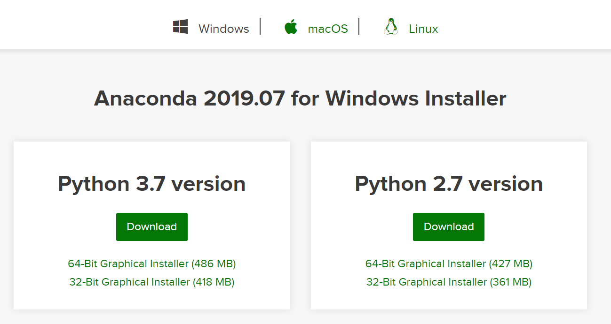
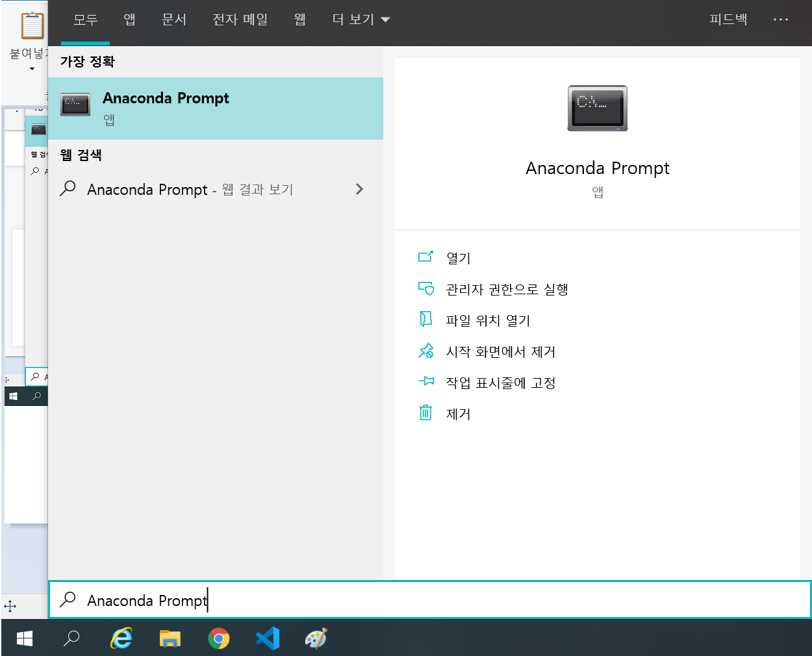
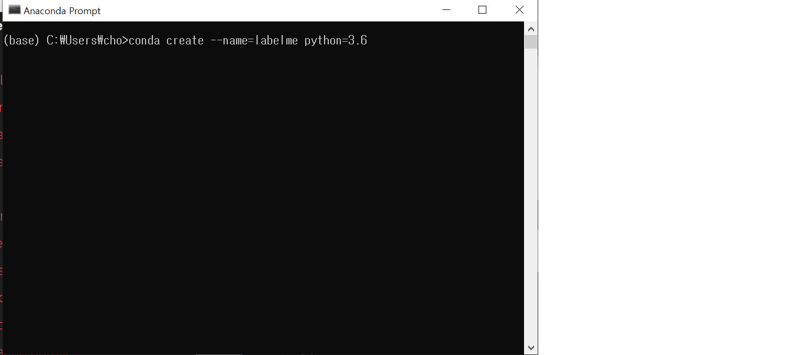
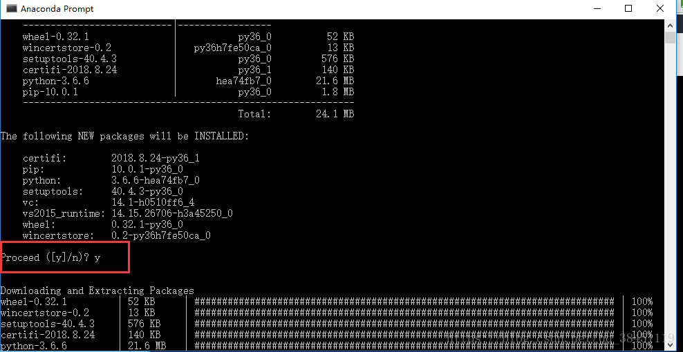

Label을 이용한 Style Transfer 방법이란 이미지를 원하는 구역만큼 나눠서 원하는 스타일로 변환시키는 방법입니다.
이를 위해선 Labelme라는 프로그램을 사용해야 하기때문에 지금부터 설치 방법을 알려드리겠습니다. 이 방법은 PC환경에서만 가능합니다.
먼저 Anaconda를 설치해야 합니다.

위 링크에 들어가셔서 Python 3.7버전을 다운로드 합니다.

다운로드를 마친 후 Anaconda Prompt를 실행합니다.

실행 한 후 검은 창에 conda create --name=labelme python=3.6을 입력합니다.

중간에 계속 설치할것인지 물으면 Y를 입력합니다.
마찬가지로 다음 명령어들을 차례대로 입력하면 설치가 완료됩니다.
conda activate labelme
pip install pyqt5
pip install labelme
설치를 마친 후 프롬프트에 labelme를 쳤을 때 다음과 같은 프로그램이 실행되면 설치 완료입니다.
만약 labelme를 설치한 후 나중에 다시 프로그램을 실행하고 싶을 땐, Anaconda Prompt를 실행하고
conda activate labelme를 입력한 후 labelme를 입력하면 labelme가 실행됩니다.